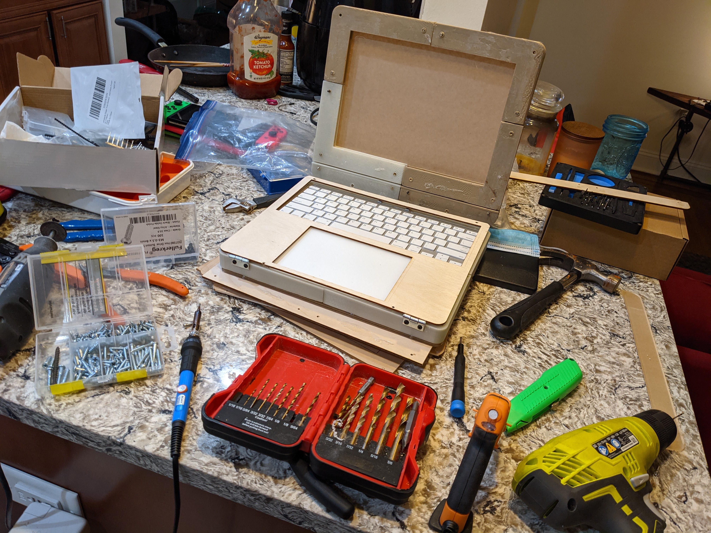
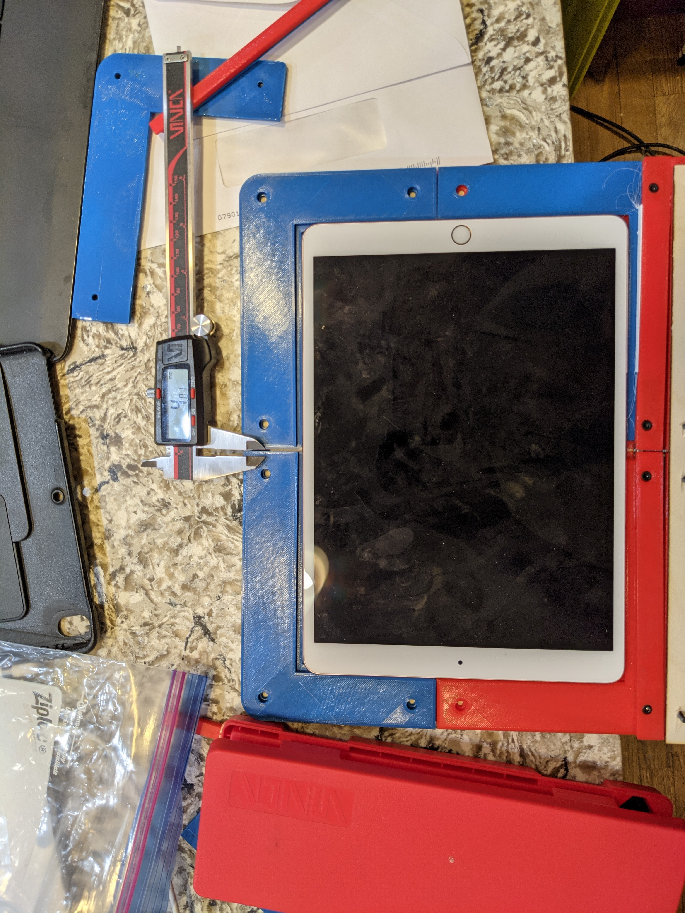
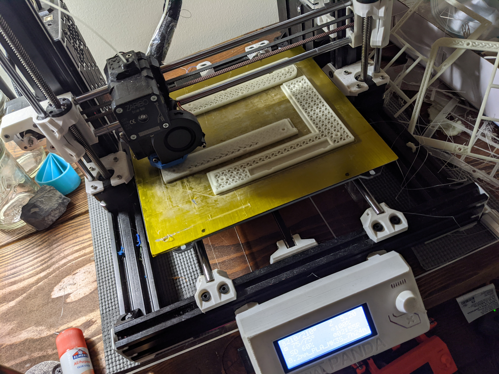
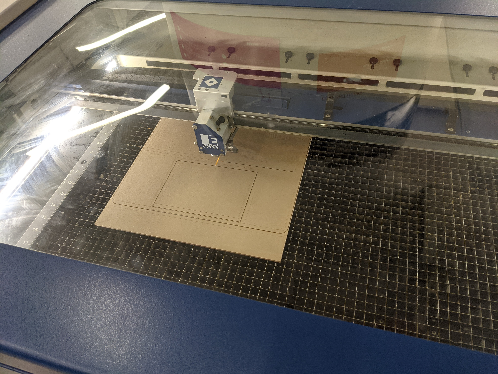
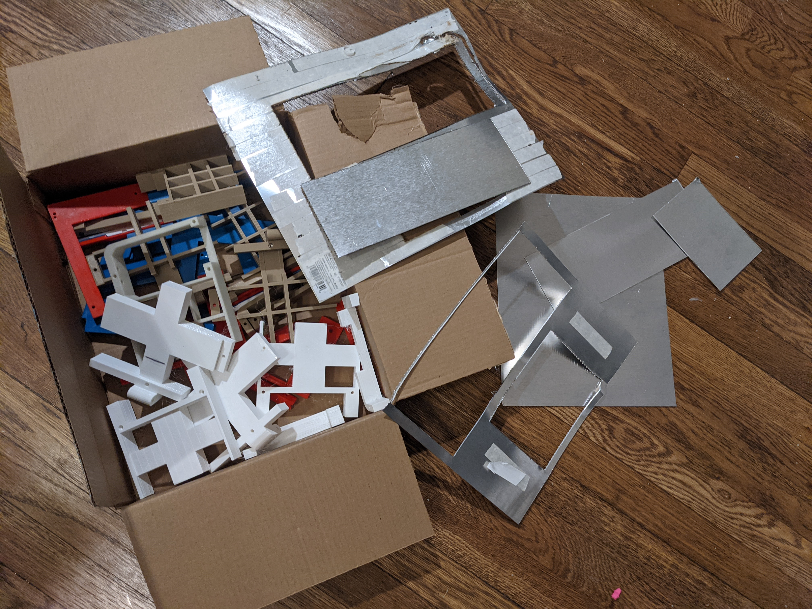
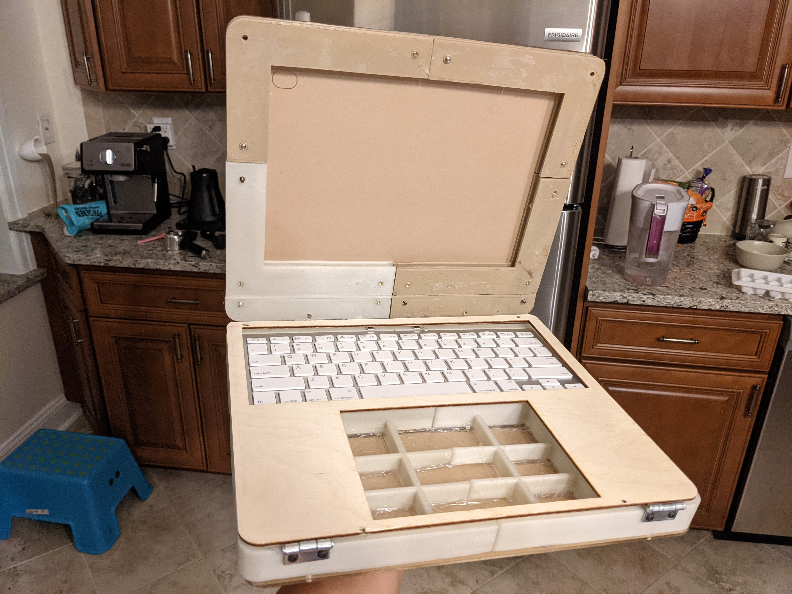
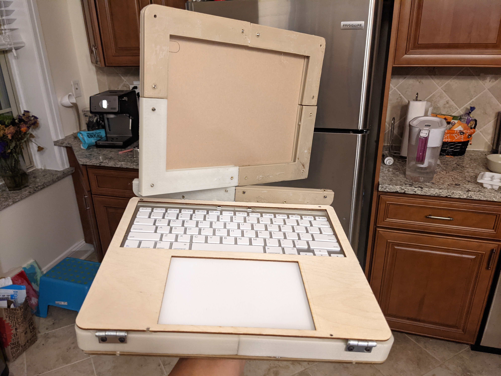
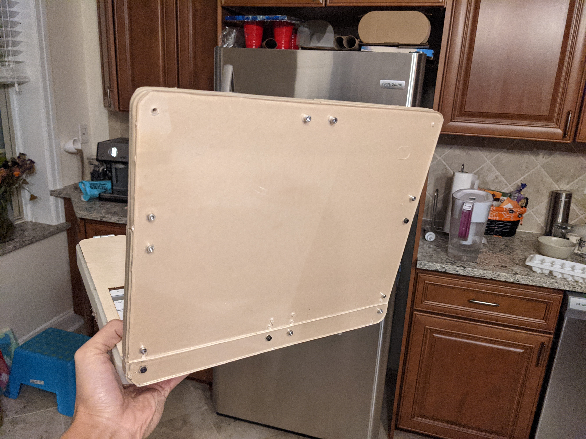

Ideation & Prototyping Week 13
Research for Design #3 Analyzing findings, developing personas and insights
 For this project, it all started with an idea to solve a personal problem. I wanted a nice capable lightweight portable device with a good battery, keyboard, touchpad, and most of all cheap. Starting with a fail faster mentality to get to the end goal quicker in mind I fabricated a usable prototype.  I took some steps back to research and gather data to improve the design working sort of out of order. Some disadvantages were doing this like a lot of wasted material and scrapped design work but the advantage was that I was able to gain a lot of in-depth knowledge and experience on the building process as well as give others a more concrete idea of my product.  Through research from design I was able to experiment with different materials and physically understand how they looked, felt, and performed. I was able to get my hands dirty, gaining experience working with the manufacturing machines to see what did and didn't work. I was able to bring my prototype to people in person and had them hold and test it to gain feedback and for online interviews, I was able to show it off through webcam.  A lot of my research for building the prototype came from looking at other designs, reading about different processes like 3D printing for strength or lightness. I learned a lot about different mechanical hardware like threaded inserts, friction position hinges, what screw sizes to use, and more. Some of the hardest parts of the process was getting my materials to cut properly, I had a lot of things that I had to manually go back and re-cut. A lot of the parts had things that came out misaligned and getting to the maker space wasn't always the easy endeavor. 3D printing had some challenges too, where pieces would come off the print bed halfway through resulting in hours of wasted time and plastic. I had to construct some parts of my prototype in less than ideal methods such as using hot glue instead of screws.  For researching my target audience, I found it polarizing where the product was perfect for some people and completely unneeded by others. Some people would rather get their work done at home with their optimized setups and spend their time out and about not working while some enjoyed getting work done on the go. This made me lean more into the open-source idea, with a basic design and options for different customizability, anyone who has the ambition can go out and make their own exactly how they like. It's also a pretty fun project for people who like to just build things.  If I were to do it again, I think I would have started simpler with a design that didn't include the swivel or room for power banks, maybe then, I could have had a working prototype in hand for testing and user review earlier. I think I made some great strides with my project and I'm in a good position to continue and keep making better versions of it especially with winter breaking around the corner. I'm planning on really dialing in the settings for my printer and taking my time getting my pieces cut with proper measurements next time I get to go to the maker space.  In the end, I learned so much about listening to what people say instead of guessing what they want. I'm also really glad I was able to work with so many different materials and get to know new skills like laser cutting and milling. 
home
while (!deck.isInOrder()) {
print 'Iteration ' + i;
deck.shuffle();
i++;
}
print 'It took ' + i + ' iterations to sort the deck.';